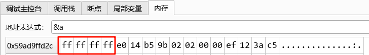
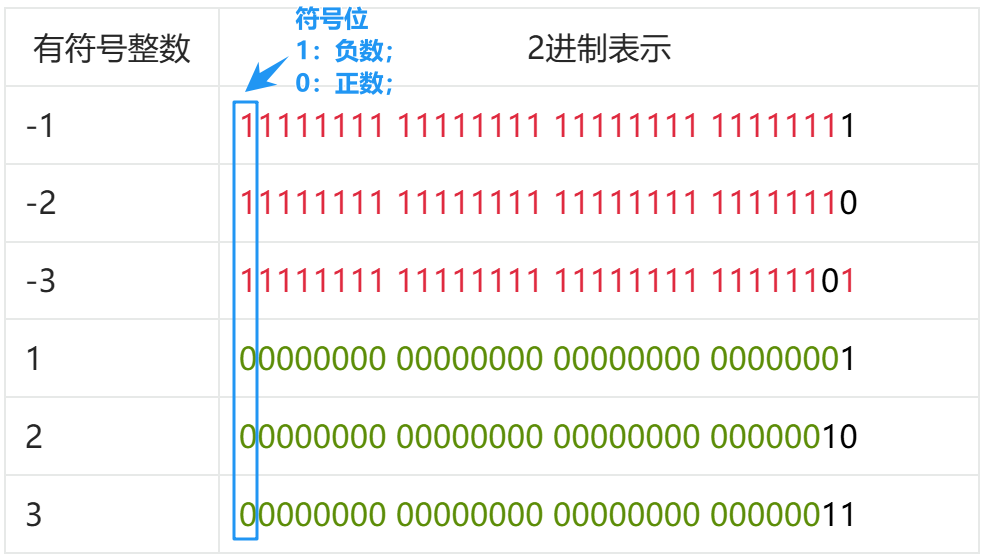
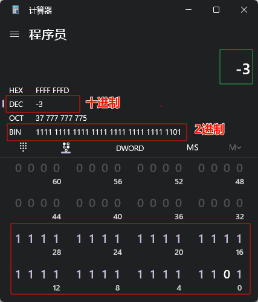
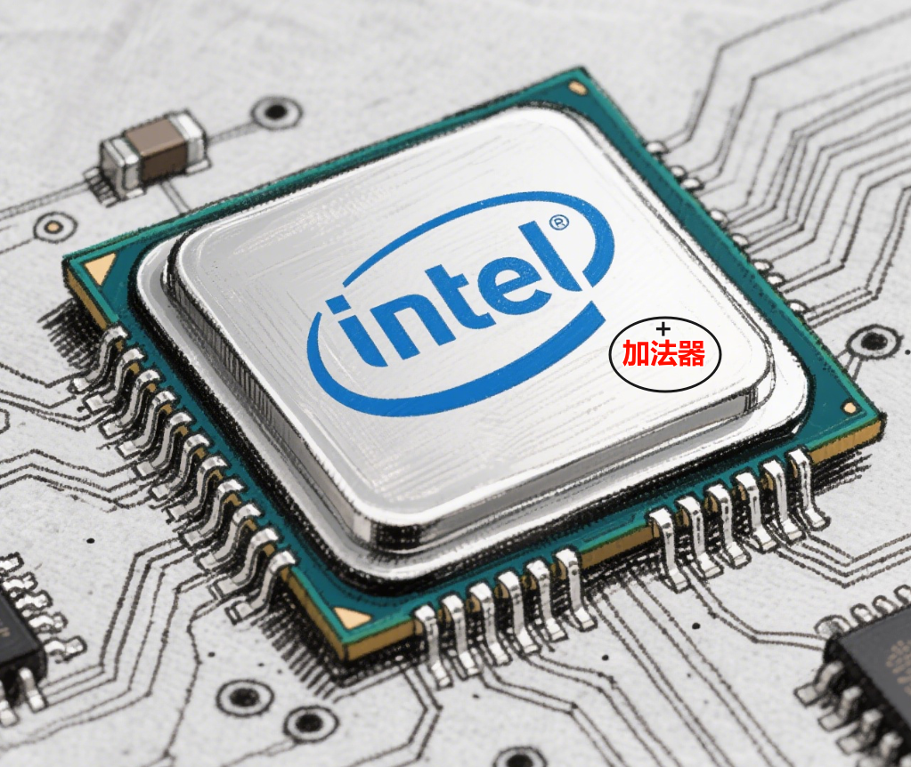
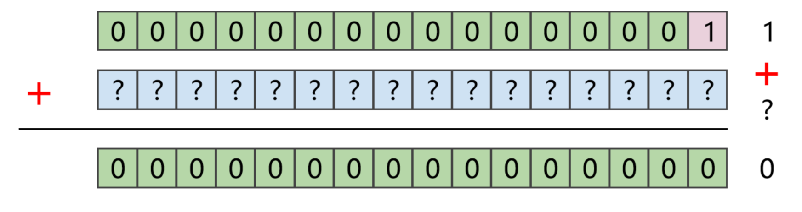
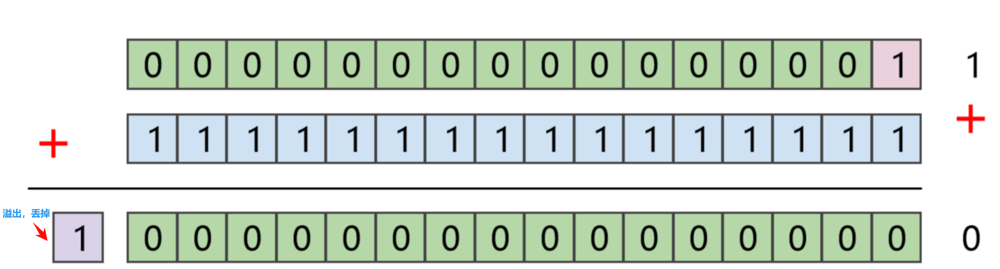

<!DOCTYPE lake>
<h1 data-lake-id="rEDwB" id="rEDwB"><span data-lake-id="ubf773929" id="ubf773929">0&gt; -1在计算中如何存储的？</span></h1><span class="yuque-card-unsupported">[codeblock]</span><p data-lake-id="ued7a08e2" id="ued7a08e2"><br/></p><span class="yuque-card-unsupported">[codeblock]</span><p data-lake-id="u44315e97" id="u44315e97"></p><p data-lake-id="u581ed4e8" id="u581ed4e8"><span data-lake-id="u655176fd" id="u655176fd">🙃</span><strong><span class="lake-fontsize-18" data-lake-id="u9cf38a6c" id="u9cf38a6c" style="color: #D22D8D">Amazing!,</span></strong><span data-lake-id="u9104e9e9" id="u9104e9e9"> 内存数据是</span><code data-lake-id="u2437e947" id="u2437e947"><span data-lake-id="udfb7ec97" id="udfb7ec97" style="color: #2F4BDA">0xffffffff</span></code><span data-lake-id="u46ac3052" id="u46ac3052">， </span></p><p data-lake-id="u3107bf65" id="u3107bf65"><span data-lake-id="u19145fec" id="u19145fec">转换为二进制就是</span><code data-lake-id="ub71d15c8" id="ub71d15c8"><span data-lake-id="u346eb98a" id="u346eb98a" style="color: #DF2A3F">11111111 11111111 11111111 11111111</span></code><span data-lake-id="u1afa0a55" id="u1afa0a55" style="color: #DF2A3F">；</span></p><hr/><h1 data-lake-id="UvXof" id="UvXof"><span data-lake-id="u780b7e6a" id="u780b7e6a">1&gt; 动手验证</span></h1><h2 data-lake-id="JiX83" id="JiX83"><span data-lake-id="ua9eea08e" id="ua9eea08e">1.1&gt; 打印数据</span></h2><span class="yuque-card-unsupported">[codeblock]</span><p data-lake-id="u52ab4b2f" id="u52ab4b2f"><br/></p><table class="lake-table" data-lake-id="jS2Ov" id="jS2Ov" margin="true" style="width: 726px" width-mode="contain"><colgroup><col width="113"/><col width="250"/><col width="363"/></colgroup><tbody><tr data-lake-id="ueefab6e0" id="ueefab6e0" style="height: 36px"><td data-lake-id="ua9d02159" id="ua9d02159"><p data-lake-id="uda286542" id="uda286542" style="text-align: center"><span data-lake-id="ud8f7d802" id="ud8f7d802">有符号整数</span></p></td><td data-lake-id="u1fdd1802" id="u1fdd1802"><p data-lake-id="u0b7ecb93" id="u0b7ecb93" style="text-align: center"><span data-lake-id="u8e00ee13" id="u8e00ee13">16进制表示</span></p></td><td data-lake-id="u13831c01" id="u13831c01"><p data-lake-id="uf93f0552" id="uf93f0552" style="text-align: center"><span data-lake-id="uac05ae4f" id="uac05ae4f">2进制表示</span></p></td></tr><tr data-lake-id="u43158bd9" id="u43158bd9" style="height: 36px"><td data-lake-id="uf53c1433" id="uf53c1433"><p data-lake-id="uea51751b" id="uea51751b"><span data-lake-id="u51ec4626" id="u51ec4626">-1</span></p></td><td data-lake-id="u42505a8a" id="u42505a8a"><p data-lake-id="ufb7e9941" id="ufb7e9941"><span data-lake-id="u783d1f3a" id="u783d1f3a" style="color: #2F4BDA">0xfffffff</span><span data-lake-id="u8cd25a54" id="u8cd25a54" style="color: #000000">f</span></p></td><td data-lake-id="u73a30076" id="u73a30076"><p data-lake-id="u6f62b21e" id="u6f62b21e"><span data-lake-id="ufc574dfd" id="ufc574dfd" style="color: #DF2A3F">11111111 11111111 11111111 1111111</span><span data-lake-id="u7d2d9f11" id="u7d2d9f11" style="color: #000000">1</span></p></td></tr><tr data-lake-id="u14c0177a" id="u14c0177a"><td data-lake-id="u1aa19320" id="u1aa19320"><p data-lake-id="udf7097ff" id="udf7097ff"><span data-lake-id="uae15ab49" id="uae15ab49">-2</span></p></td><td data-lake-id="uee10e94a" id="uee10e94a"><p data-lake-id="ufc9b894f" id="ufc9b894f"><span data-lake-id="ue5fcd994" id="ue5fcd994" style="color: #2F4BDA">0xfffffff</span><span data-lake-id="u2f104e21" id="u2f104e21" style="color: #000000">e</span></p></td><td data-lake-id="u75676f0f" id="u75676f0f"><p data-lake-id="ud782ac3c" id="ud782ac3c"><span data-lake-id="u7f80287a" id="u7f80287a" style="color: #DF2A3F">11111111 11111111 11111111 1111111</span><span data-lake-id="u94fcadf3" id="u94fcadf3" style="color: #000000">0</span></p></td></tr><tr data-lake-id="u406ee508" id="u406ee508" style="height: 36px"><td data-lake-id="u0db99c99" id="u0db99c99"><p data-lake-id="u5edf84a6" id="u5edf84a6"><span data-lake-id="u0c137e12" id="u0c137e12">-3</span></p></td><td data-lake-id="ufaed74e3" id="ufaed74e3"><p data-lake-id="u39781d73" id="u39781d73"><span data-lake-id="u66a1f570" id="u66a1f570" style="color: #2F4BDA">0xfffffff</span><span data-lake-id="ucf925389" id="ucf925389" style="color: #000000">d</span></p></td><td data-lake-id="u0d26069d" id="u0d26069d"><p data-lake-id="u30183e8b" id="u30183e8b"><span data-lake-id="uae17b270" id="uae17b270" style="color: #DF2A3F">11111111 11111111 11111111 111111</span><span data-lake-id="u4f5d8ca1" id="u4f5d8ca1" style="color: #000000">0</span><span data-lake-id="udddae5e2" id="udddae5e2" style="color: #DF2A3F">1</span></p></td></tr><tr data-lake-id="uc06f1f8e" id="uc06f1f8e" style="height: 36px"><td data-lake-id="uf5aacce4" id="uf5aacce4"><p data-lake-id="u3bb79a14" id="u3bb79a14"><span data-lake-id="u51690149" id="u51690149">1</span></p></td><td data-lake-id="u5ec8cf1f" id="u5ec8cf1f"><p data-lake-id="ub6098596" id="ub6098596"><span data-lake-id="u8d254f8c" id="u8d254f8c" style="color: #2F4BDA">0x00000001</span></p></td><td data-lake-id="uad0f72b5" id="uad0f72b5"><p data-lake-id="u6063a94e" id="u6063a94e"><span data-lake-id="u1ff477d5" id="u1ff477d5" style="color: #5C8D07">00000000 00000000 00000000 0000000</span><span data-lake-id="ub679e97e" id="ub679e97e" style="color: #000000">1</span><span data-lake-id="u7db2888b" id="u7db2888b" style="color: #5C8D07"> </span></p></td></tr><tr data-lake-id="uf3d5d4cc" id="uf3d5d4cc" style="height: 36px"><td data-lake-id="uf18a8c2c" id="uf18a8c2c"><p data-lake-id="ucbae8c7d" id="ucbae8c7d"><span data-lake-id="ud8b25618" id="ud8b25618">2</span></p></td><td data-lake-id="uce5b143f" id="uce5b143f"><p data-lake-id="u7db5c75c" id="u7db5c75c"><span data-lake-id="ubf9f7b07" id="ubf9f7b07" style="color: #2F4BDA">0x00000002</span></p></td><td data-lake-id="uc3c57d1f" id="uc3c57d1f"><p data-lake-id="ua3f45bfd" id="ua3f45bfd"><span data-lake-id="u0c26fda0" id="u0c26fda0" style="color: #5C8D07">00000000 00000000 00000000 000000</span><span data-lake-id="uef5a74f2" id="uef5a74f2" style="color: #000000">10</span></p></td></tr><tr data-lake-id="u5ecc4aad" id="u5ecc4aad"><td data-lake-id="ubac1c89a" id="ubac1c89a"><p data-lake-id="u38a0f060" id="u38a0f060"><span data-lake-id="ubf569977" id="ubf569977">3</span></p></td><td data-lake-id="u4115247c" id="u4115247c"><p data-lake-id="u9fad4ad2" id="u9fad4ad2"><span data-lake-id="ucfe8d795" id="ucfe8d795" style="color: #2F4BDA">0x00000003</span></p></td><td data-lake-id="u28d56e80" id="u28d56e80"><p data-lake-id="u3521042a" id="u3521042a"><span data-lake-id="ud508343c" id="ud508343c" style="color: #5C8D07">00000000 00000000 00000000 000000</span><span data-lake-id="ucebf1e66" id="ucebf1e66" style="color: #000000">11</span></p></td></tr></tbody></table><p data-lake-id="u08fea7f4" id="u08fea7f4"><br/></p><p data-lake-id="u0c089ba3" id="u0c089ba3"><span data-lake-id="uf5153fb5" id="uf5153fb5">呦呵，但凡是负数，都奇奇怪怪的！ </span></p><p data-lake-id="u2ec6f6ec" id="u2ec6f6ec"><span data-lake-id="uf97cc731" id="uf97cc731">📚</span><span data-lake-id="ue80f92b2" id="ue80f92b2">一顿查资料，跟计算机的底层设计有关，</span></p><p data-lake-id="u9e09773f" id="u9e09773f"><span data-lake-id="ud58384dd" id="ud58384dd">现代计算机使用</span><code data-lake-id="u46fe154f" id="u46fe154f"><strong><span class="lake-fontsize-14" data-lake-id="u0d7eac75" id="u0d7eac75" style="color: #601BDE">补码</span></strong><strong><span data-lake-id="u9f440e5f" id="u9f440e5f" style="color: #DF2A3F">(two's complement)</span></strong></code><span data-lake-id="ucda22884" id="ucda22884">表示有符号整数；</span></p><hr/><h2 data-lake-id="trwzt" id="trwzt"><span data-lake-id="u8427380b" id="u8427380b">1.2&gt; 符号位</span></h2><p data-lake-id="u657ffcc0" id="u657ffcc0"></p><p data-lake-id="u844d7029" id="u844d7029"><span data-lake-id="u8463e7a2" id="u8463e7a2">🐧</span><span data-lake-id="u35840e65" id="u35840e65">规则：最高位是符号位，0 表示正，1 表示负；</span></p><hr/><h1 data-lake-id="dpMUq" id="dpMUq"><span data-lake-id="ua334a3b9" id="ua334a3b9">2&gt; 求-1的补码</span></h1><h2 data-lake-id="lfxrw" id="lfxrw"><span data-lake-id="u5a138d09" id="u5a138d09">2.1&gt; 手动计算</span></h2><h3 data-lake-id="OTUsl" id="OTUsl"><span data-lake-id="ua8abc1a7" id="ua8abc1a7">步骤1：求绝对值的原码</span></h3><p data-lake-id="u484f1d5f" id="u484f1d5f"><span data-lake-id="u635b3c8b" id="u635b3c8b">规则：</span></p><p data-lake-id="u3c5e476b" id="u3c5e476b"><span data-lake-id="uc99c1ed1" id="uc99c1ed1">求负数的绝对值，写出其二进制原码（符号位为 </span><code data-lake-id="u0e8b45ba" id="u0e8b45ba"><span data-lake-id="u17333d92" id="u17333d92">0</span></code><span data-lake-id="udc7ed4df" id="udc7ed4df">）</span></p><span class="yuque-card-unsupported">[codeblock]</span><h3 data-lake-id="noiPq" id="noiPq"><span data-lake-id="u4640b40c" id="u4640b40c">步骤2：负数的</span><span data-lake-id="u257771ce" id="u257771ce" style="color: #DF2A3F">原码</span></h3><p data-lake-id="ub53a4667" id="ub53a4667"><span data-lake-id="u5e5670cb" id="u5e5670cb">规则：</span></p><p data-lake-id="u13dfa7ff" id="u13dfa7ff"><span data-lake-id="u607b3f29" id="u607b3f29">最高位为符号位，其余位表示绝对值的二进制。</span></p><span class="yuque-card-unsupported">[codeblock]</span><h3 data-lake-id="ZyELK" id="ZyELK"><span data-lake-id="uf247daa1" id="uf247daa1">步骤3：求出</span><span data-lake-id="u0f3dc9da" id="u0f3dc9da" style="color: #601BDE">反码</span></h3><p data-lake-id="u609d365d" id="u609d365d"><span data-lake-id="u8d493256" id="u8d493256">规则：</span></p><ul list="u34ca3cda"><li data-lake-id="u9fb99c07" fid="uede85218" id="u9fb99c07"><span data-lake-id="uc13704ca" id="uc13704ca">正数的反码 = 原码</span></li><li data-lake-id="u4d849000" fid="uede85218" id="u4d849000"><span data-lake-id="u4f61827d" id="u4f61827d">负数的反码 = 符号位保持为 </span><code data-lake-id="uba819cdd" id="uba819cdd"><strong><span data-lake-id="u3a19cf45" id="u3a19cf45" style="color: #DF2A3F">1</span></strong></code><span data-lake-id="ua2296833" id="ua2296833">，其余位按位取反</span></li></ul><span class="yuque-card-unsupported">[codeblock]</span><h3 data-lake-id="NQRDL" id="NQRDL"><span data-lake-id="u0eba46ce" id="u0eba46ce">步骤4：求补码，反码+1</span></h3><p data-lake-id="u57ec9a08" id="u57ec9a08"><span data-lake-id="u636ef394" id="u636ef394">规则：</span></p><ul list="u36d630a8"><li data-lake-id="u01d26afc" fid="u4303b39e" id="u01d26afc"><span data-lake-id="u42b96304" id="u42b96304">正数的补码 = 原码</span></li><li data-lake-id="ud2d7164e" fid="u4303b39e" id="ud2d7164e"><span data-lake-id="ubda9f08a" id="ubda9f08a">负数的补码 = 反码 + 1（或者：从对应正数按位取反再加 1）</span></li></ul><span class="yuque-card-unsupported">[codeblock]</span><p data-lake-id="ub500b1d7" id="ub500b1d7"><span data-lake-id="udf4610c9" id="udf4610c9">呦呵，与我们程序打印的一样</span><span data-lake-id="u0bdf568f" id="u0bdf568f">😀</span><span data-lake-id="u6112539c" id="u6112539c">！</span></p><hr/><p data-lake-id="u4af582a1" id="u4af582a1"><span data-lake-id="u3fc167e7" id="u3fc167e7">手动算下，-2，-3的补码形式</span></p><span class="yuque-card-unsupported">[codeblock]</span><p data-lake-id="ufa19e06c" id="ufa19e06c"><br/></p><span class="yuque-card-unsupported">[codeblock]</span><p data-lake-id="u903af409" id="u903af409"><br/></p><h2 data-lake-id="fIJii" id="fIJii"><span data-lake-id="u6461bcb2" id="u6461bcb2">2.2&gt; 计算器验证</span></h2><p data-lake-id="ucda09550" id="ucda09550"></p><p data-lake-id="u4f121f9f" id="u4f121f9f"><br/></p><h2 data-lake-id="KLHpD" id="KLHpD"><span data-lake-id="ud3e217c0" id="ud3e217c0">2.3&gt; 补码总结</span></h2><p data-lake-id="ud22678e2" id="ud22678e2"><span data-lake-id="ud9dad7c1" id="ud9dad7c1">✅</span><span data-lake-id="ua0f5e97e" id="ua0f5e97e" style="color: #DF2A3F">补码</span><span data-lake-id="u3e5fdf37" id="u3e5fdf37">是现代计算机系统中表示</span><span data-lake-id="u499c6d94" id="u499c6d94" style="color: #DF2A3F">有符号整数</span><span data-lake-id="u676fb2b9" id="u676fb2b9">的标准方法;</span></p><p data-lake-id="u984d0d5c" id="u984d0d5c"></p><p data-lake-id="u2ef22e1f" id="u2ef22e1f"><span data-lake-id="u0b3aeb08" id="u0b3aeb08">✅</span><span data-lake-id="ue08cf458" id="ue08cf458">正数：补码与原码相同；</span></p><span class="yuque-card-unsupported">[codeblock]</span><p data-lake-id="u57141a94" id="u57141a94"><span data-lake-id="u02d2be32" id="u02d2be32">❓</span><span data-lake-id="u773d0341" id="u773d0341"> 负数在内存中的存储为什么要，这么麻烦，又是取反，又是+1的？</span></p><hr/><h1 data-lake-id="vlUYA" id="vlUYA"><span data-lake-id="ubcf85215" id="ubcf85215">3&gt; 为什么要补码？</span></h1><h2 data-lake-id="zfblx" id="zfblx"><span data-lake-id="u6780f414" id="u6780f414">3.1&gt;  功能需求</span></h2><p data-lake-id="u1a39174b" id="u1a39174b"></p><p data-lake-id="u617b873c" id="u617b873c"><span data-lake-id="u6c992e1b" id="u6c992e1b" style="color: #000000">计算机CPU中只有加法器硬件，没有专门的减法器，要计算</span><code data-lake-id="udbff09f7" id="udbff09f7"><span data-lake-id="ub0b9a3a1" id="ub0b9a3a1" style="color: #DF2A3F">1 - 1 = ?</span></code><span data-lake-id="u5f025da7" id="u5f025da7" style="color: #000000">， 你怎么办？</span></p><hr/><h2 data-lake-id="ePmHH" id="ePmHH"><span data-lake-id="u22a97612" id="u22a97612" style="color: #000000">3.2&gt; 求解1-1</span></h2><p data-lake-id="u75bbb23d" id="u75bbb23d"><span data-lake-id="u34e954dd" id="u34e954dd">🐳</span><span data-lake-id="uea78634c" id="uea78634c" style="color: #000000">见证人类的智慧的时候：</span></p><p data-lake-id="ufeee9142" id="ufeee9142"><span data-lake-id="ubaabaf61" id="ubaabaf61" style="color: #000000">第</span><span data-lake-id="ue69e429d" id="ue69e429d">1️⃣</span><span data-lake-id="ueb042339" id="ueb042339" style="color: #000000">步：思考</span><code data-lake-id="uf7983744" id="uf7983744"><span data-lake-id="u1da8578a" id="u1da8578a" style="color: #000000">0000 0000 0000 0001 </span></code><span data-lake-id="u46860306" id="u46860306" style="color: #000000">+ </span><code data-lake-id="u49d98906" id="u49d98906"><strong><span data-lake-id="ua93fa4a3" id="ua93fa4a3" style="color: #DF2A3F">（）</span></strong></code><span data-lake-id="u0bc0737d" id="u0bc0737d" style="color: #000000"> = 0？  （以16位数据为例）</span></p><p data-lake-id="u1b6ac621" id="u1b6ac621"></p><hr/><p data-lake-id="ua381a32a" id="ua381a32a"><span data-lake-id="u77215789" id="u77215789">第</span><span data-lake-id="u5ce6094a" id="u5ce6094a">2️⃣</span><span data-lake-id="u807baa56" id="u807baa56">步：</span><span data-lake-id="ub85122eb" id="ub85122eb" style="color: #000000">天才人类想到了</span><code data-lake-id="ue0ea1815" id="ue0ea1815"><span data-lake-id="u9f44685a" id="u9f44685a" style="color: #000000">0000 0000 0000 0001 </span></code><span data-lake-id="ub37c15c3" id="ub37c15c3" style="color: #000000">+ </span><code data-lake-id="ud4151c86" id="ud4151c86"><strong><span data-lake-id="u9012ec9a" id="u9012ec9a" style="color: #DF2A3F">（1111 1111 1111 1111）</span></strong></code><span data-lake-id="u477f65df" id="u477f65df" style="color: #000000"> = 0？</span></p><p data-lake-id="u0e35396a" id="u0e35396a"></p><p data-lake-id="u3d9c36c8" id="u3d9c36c8"><span data-lake-id="ufc959515" id="ufc959515">结果产生17位数据，最高位保留1丢掉，正好留下0000 0000 0000 0000</span></p><p data-lake-id="uf60489aa" id="uf60489aa"><span data-lake-id="u3b657309" id="u3b657309">最终结果为0，正是我们期望1+（1个数）等于0</span></p><span class="yuque-card-unsupported">[codeblock]</span><p data-lake-id="ubb6a9316" id="ubb6a9316"><br/></p><p data-lake-id="u10494f8c" id="u10494f8c"><span data-lake-id="u71271a30" id="u71271a30">第</span><span data-lake-id="ud5947d9a" id="ud5947d9a">3️⃣</span><span data-lake-id="ue6f3f548" id="ue6f3f548">步：</span><code data-lake-id="u0b3ce17b" id="u0b3ce17b"><span data-lake-id="ubc908886" id="ubc908886" style="color: #DF2A3F">0b1111111111111111</span></code><span data-lake-id="u0b4dffec" id="u0b4dffec">；眼熟吗？</span></p><span class="yuque-card-unsupported">[codeblock]</span><p data-lake-id="ua9f806d2" id="ua9f806d2"><span data-lake-id="u085c28f3" id="u085c28f3">​</span><br/></p><p data-lake-id="u618acadb" id="u618acadb"><code data-lake-id="udfdeedd6" id="udfdeedd6"><span data-lake-id="u73e15d8c" id="u73e15d8c" style="color: #000000">0000 0000 0000 0001 </span></code><span data-lake-id="u0b43cb32" id="u0b43cb32" style="color: #000000">+ </span><code data-lake-id="uf9479df1" id="uf9479df1"><strong><span data-lake-id="ub8642893" id="ub8642893" style="color: #DF2A3F">（1111 1111 1111 1111）</span></strong></code><span data-lake-id="u3b7e9f8a" id="u3b7e9f8a" style="color: #000000"> = 0？</span></p><p data-lake-id="u55a0ddf9" id="u55a0ddf9"><span data-lake-id="ucb42517b" id="ucb42517b" style="color: #000000">呦呵，那我们这个式子就能改写为：</span></p><p data-lake-id="ud1321a79" id="ud1321a79"><span data-lake-id="u148878fc" id="u148878fc" style="color: #000000">1+</span><span data-lake-id="ubaede395" id="ubaede395" style="color: #DF2A3F">（-1）</span><span data-lake-id="u445a49bc" id="u445a49bc" style="color: #000000">= 0；也就是1-1 = 0；</span><span data-lake-id="u52fff07e" id="u52fff07e">😮😮😮</span><span data-lake-id="ub2eb846b" id="ub2eb846b">天才！如此巧妙！！！</span></p><hr/><h2 data-lake-id="il18u" id="il18u"><span data-lake-id="ufebe916c" id="ufebe916c" style="color: #000000">3.3&gt; 补码的作用</span></h2><p data-lake-id="u49b3fdb8" id="u49b3fdb8" style="text-indent: 2em"><span data-lake-id="ubcd2b6fc" id="ubcd2b6fc">计算机中，把有符号数，比如，-1，-2等，以补码的形式存储时，</span></p><p data-lake-id="u3ebec821" id="u3ebec821"><span data-lake-id="ua7d0b395" id="ua7d0b395">我们在计算 1-1减法时，就可以转换为1+（-1），只用CPU中的加法器就完成了减法！</span></p><p data-lake-id="u281d3a66" id="u281d3a66"><span data-lake-id="u88716c6b" id="u88716c6b">🐳</span><span data-lake-id="u8842a1e1" id="u8842a1e1">一旦用了补码机制，加减法可用同一套电路实现， 大大简化了CPU的硬件！</span></p><hr/><h1 data-lake-id="nNerv" id="nNerv"><span data-lake-id="u5ebfe085" id="u5ebfe085">🐻</span><span data-lake-id="ud9bde596" id="ud9bde596">实践练习：</span></h1><p data-lake-id="u48ca98ce" id="u48ca98ce"><span data-lake-id="u7e1d237f" id="u7e1d237f">CPU只有加法器，计算 1 - 1=？的过程如下，请你写出5-5的过程；</span></p><span class="yuque-card-unsupported">[codeblock]</span>